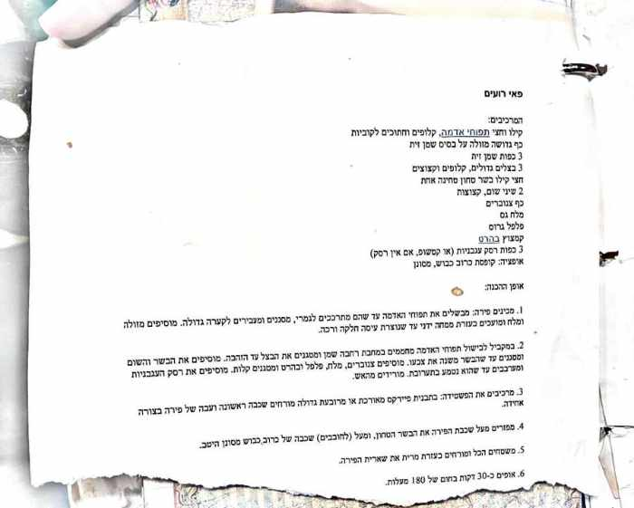
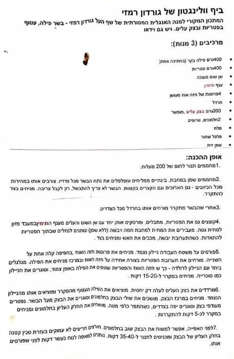
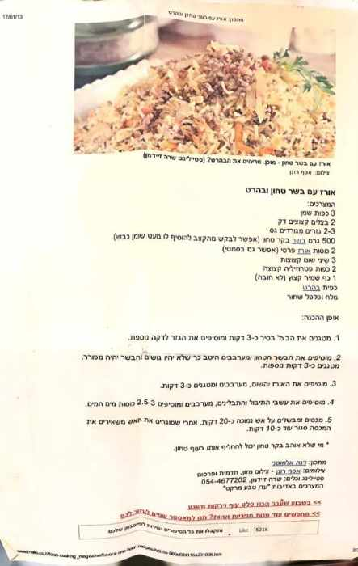
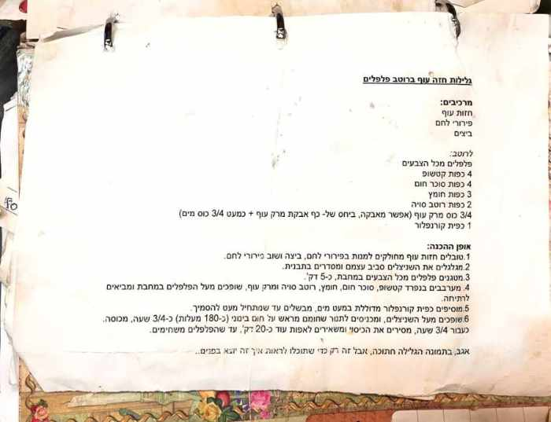
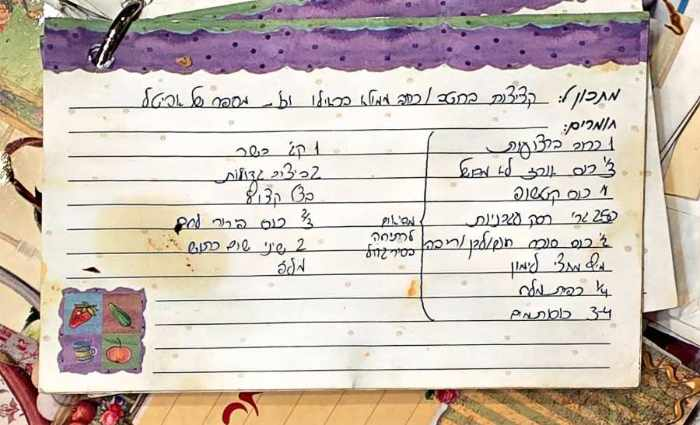
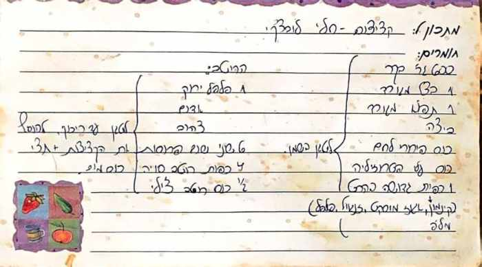
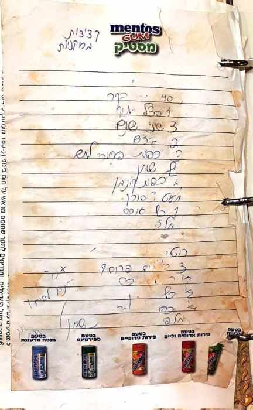

קטגוריות
כל המתכונים, מסודרים לפי סוג
עוגות
5 מתכוניםפאים וטארטים
5 מתכונים


עוגיות
2 מתכוניםמאפים
2 מתכונים
מנות עיקריות
7 מתכונים
פאי רועים
— של אמא
בשרי

ביף וולינגטון
— גורדון רמזי
בשריחגיגי

אורז עם בשר טחון ובהרט
— דנה אלמוסני
בשריסיר אחד

גלילות חזה עוף ברוטב פלפלים
— מהקלסר של תמר
בשרי

קציצות בשר ברוטב מתקתק
— מהספר של אביטל
בשרי

הקציצות של חלי לופצ׳י
— חלי
בשרימתובל

קציצות ממולאות
— מהפנקס הישן · כתב היד קשה לפענוח
בשרי